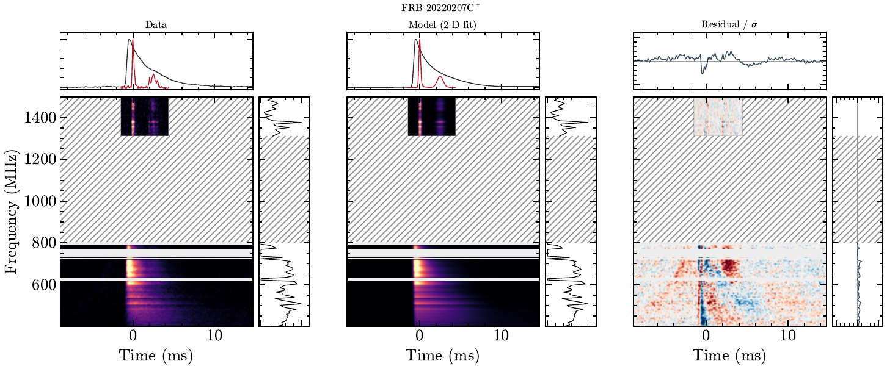

triptych-zach: Data/model/residual triptych: FRB 20220207C
Status: pending
zach · FRB 20220207C

- Reproduction gate
- Verified
- Manuscript section
- Joint scattering fit audit; not compiled
- Claim
- Morphology candidates only; fitted values remain trust-pending
- Owner review question
- Do the data-model residuals support or immediately flag this candidate fit?
- Manuscript target
figures/codetection_triptych/zach_triptych.pdf- Candidate SHA-256
53e1378e67d5fa573a8037629991eb7f941d2982956e13c56be532687ecf80ed- Generator
scripts/plot_codetection_triptych.py- Required provenance
- adopted DM and input-product DM for both telescopes; exact joint-model artifact SHA-256 or explicit data-only status; exact fit summary and configuration SHA-256; component counts, priors, and fit-generation reproducibility status; display window, resolution, and masks; residual normalization and color scale; per-band residual diagnostics and morphology verdict; relationship to the approved Figure 1 layout
- Frozen evidence
- dm-catalog, joint-render-manifest, joint-latest-manifest, joint-fit-roster, joint-fit-adjudication
- DM record
{ "adopted_dm": "262.361665", "adopted_sigma": "0.010372", "adoption": "chime_primary", "between_band_sigma": "0.023274", "chime_dm": "262.361665", "chime_minus_dsa": "0.045268", "chime_sigma": "0.010372", "dsa_dm": "262.316397", "dsa_sigma": "0.029297", "gaussian_joint_dm": "262.347322", "gaussian_joint_sigma": "0.021060", "nick": "zach", "tns": "FRB 20220207C" }- Reviewer notes
- None yet